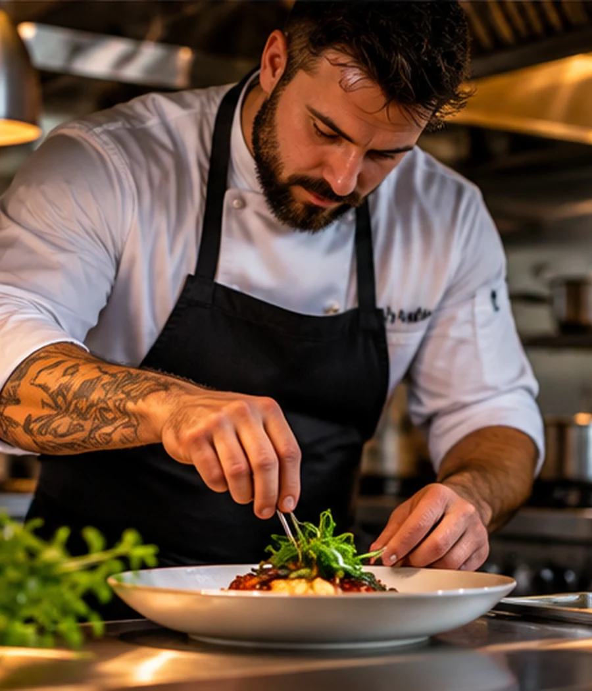

03 / BEHIND THE PLATE
The people make the place.
Make space for your kitchen philosophy, the team behind the menu, or a personal welcome. The editorial layout is designed to feel crafted rather than catalogued.
“Let the atmosphere speak, then let the food follow.”